2. Einführung in das Spring-Framework
Spring erschien 2004 zunächst als Objektcontainer. Seitdem hat es sich in verschiedene Richtungen weiterentwickelt: Spring MVC, Spring Data, Spring Batch, … [http://spring.io]. In diesem Kapitel stellen wir lediglich den Objektcontainer vor. Hier einige wichtige Punkte:
- Eine Anwendung verfügt über mehrere Klassen, von denen einige Objekte gemeinsam nutzen, die eindeutig sein müssen (Singletons). Spring erstellt und verwaltet diese Singletons;
- Spring legt diese Singletons in einer Struktur ab, die als Kontext bezeichnet wird;
- Die Klassen greifen auf die Singletons der Anwendung zu, indem sie diese über ihren Namen, ihren Typ oder beides bei Spring anfordern;
- Spring erstellt die Singletons und verwaltet ihre eventuellen Abhängigkeiten: Ein Singleton kann nämlich Verweise auf ein oder mehrere andere Singletons haben. Wenn Spring ein Singleton erstellt, erstellt es auch dessen Abhängigkeiten;
- Wenn eine auf Spring basierende Anwendung gestartet wird, kann sie Spring auffordern, alle Singletons der Anwendung zu erstellen. Diese stehen dann im Spring-Kontext zur Verfügung;
- Spring erleichtert die Verwendung von Schichtenarchitekturen und die Programmierung über Schnittstellen. In einfachen Fällen wird jede Schicht durch ein Singleton implementiert, das eine Schnittstelle implementiert. Wenn die Anwendung mit den Schnittstellen der Schichten und nicht mit deren Implementierungsklassen arbeitet, ergibt sich eine skalierbare Architektur, die es dank der folgenden beiden Merkmale ermöglicht, die Implementierung einer Schicht zu ändern, ohne die anderen zu verändern:
- Die Anwendung erhält über den Namen eine Referenz auf die Schicht. Spring liefert ihr eine Referenz auf die Klasse, die die Schicht implementiert;
- Die Anwendung verwendet diese Referenz als Referenz auf die Schnittstelle der Schicht und nicht als Referenz auf eine Klasse;
Die Deklaration von Singletons kann auf drei Arten erfolgen, die miteinander kombiniert werden können:
- innerhalb einer XML-Datei,
- in einer speziellen Konfigurationsklasse;
- mit jeder beliebigen Klasse mithilfe von Annotationen;
Im Folgenden stellen wir drei Konfigurationsbeispiele vor:
- [exemple-01]: zentralisierte Konfiguration in einer einzigen Datei XML;
- [exemple-02]: zentralisierte Konfiguration in einer einzigen Java-Klasse;
- [exemple-03]: Verteilte Konfiguration über mehrere Java-Klassen;
Das letzte Beispiel [exemple-04] befasst sich mit der Spring-Konfiguration einer mehrschichtigen Architektur. Dies ist das wichtigste Beispiel. Es wird im weiteren Verlauf immer wieder herangezogen, um die in diesem Dokument beschriebenen Architekturen zu konfigurieren.
Diese vier Beispiele bilden die Grundlage für die folgenden Abschnitte:
- Spring-Konfiguration und Abhängigkeitsinjektion;
- Verwendung von Maven zur Verwaltung der Projektabhängigkeiten;
- Verwendung von JUnit zum Testen der Projekte;
2.1. Einrichtung der Arbeitsumgebung
Sie benötigen:
- ein Java Development Kit (JDK) installiert haben (Abschnitt 23.1);
- das Abhängigkeitsmanagement-Tool Maven installiert haben (Abschnitt 23.2);
- die Spring Tool Suite (IDE) (STS) installiert haben (Abschnitt 23.3);
- den Quellcode aus dem Dokument [http://tahe.developpez.com/java/spring-database] heruntergeladen;
Importieren Sie die Ausführungskonfigurationen aus dem Ordner „[eclipse config]“ der Beispiele in STS. Diese Konfigurationen sind besonders wichtig. Bei einigen Projekten müssen zur Ausführung Argumente an JVM übergeben werden, und diese Art der Konfiguration bereitet in der Regel Kopfzerbrechen. Außerdem werden in diesem Dokument Maven-Projekte verwendet. Wenn die folgende Warnung angezeigt wird:
Hinweis: Führen Sie [Alt-F5] aus, um alle Maven-Projekte neu zu generieren.
Es wird dringend empfohlen, dieser Empfehlung zu folgen. Ohne diese Vorsichtsmaßnahme können in den Projekten unverständliche Fehler auftreten, einfach weil die Maven-Abhängigkeiten zwischen den Projekten fehlerhaft sind.
 |
- in [1], Rechtsklick auf [Package Explorer];
 |
- in [4a-4b-4c] wählen Sie den Ordner [eclipse config / launch configurations] [4b] mit den Beispielen aus;
- in [5] die verfügbaren Konfigurationen. Wählen Sie alle aus;
- Beenden Sie in [6] den Assistenten;
- in [7-8] zeigen Sie die importierten Ausführungskonfigurationen an;
 |
- in [8-9] deaktivieren Sie [9], um die Projektkonfigurationen anzuzeigen, die nicht in STS geladen wurden. Dies ist derzeit der Fall;
 |
- in [10] die Java-Anwendungen und in [11] die Ausführungskonfigurationen der ersten drei Beispiele, die wir untersuchen werden;
- in [12] die Tests, in JUnit und in [13] die Ausführungskonfiguration des vierten Beispiels dieses Abschnitts;
Erstellen Sie nun eine Eclipse-Variable mit dem Namen [M2_REPO], die den Ordner des lokalen Maven-Repositorys bezeichnet (siehe Abschnitt 23.2). Diese Variable wird in mehreren Ausführungskonfigurationen verwendet:
 |
Der Variablen [M2_REPO] wurde der Wert zugewiesen, der unten in [6] zu sehen ist:
 |
Importieren Sie nun die vier Beispiele aus dem Ordner [spring-core]:
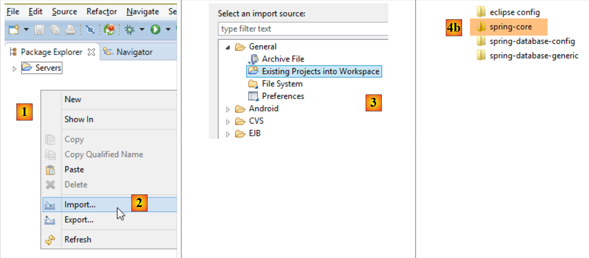 |
- in [1], Rechtsklick auf [Package Explorer];
 |
- in „[4a-4b]“ um, wählen Sie den Ordner „[spring-core]“ mit den Beispielen aus;
- In [5] alle Projekte im Ordner auswählen und [Finish] ausführen;
- in [6] die vier Projekte in [Package Explorer];
2.2. Beispiel-01
2.2.1. Das Eclipse-Projekt
 |
2.2.2. Die Klasse [Personne]
 |
package istia.st.spring.core;
public class Personne {
// Felder
private String nom;
private String prenom;
private int age;
// Konstruktoren
public Personne() {
}
public Personne(String nom, String prénom, int âge) {
this.nom = nom;
this.prenom = prénom;
this.age = âge;
}
// toString
public String toString() {
return String.format("Personne[%s, %s,%d]", prenom, nom, age);
}
// Getter und Setter
public String getNom() {
return nom;
}
public void setNom(String nom) {
this.nom = nom;
}
public String getPrenom() {
return prenom;
}
public void setPrenom(String prenom) {
this.prenom = prenom;
}
public int getAge() {
return age;
}
public void setAge(int age) {
this.age = age;
}
}
Hinweis: Getter und Setter können wie folgt automatisch generiert werden: [1-2]:
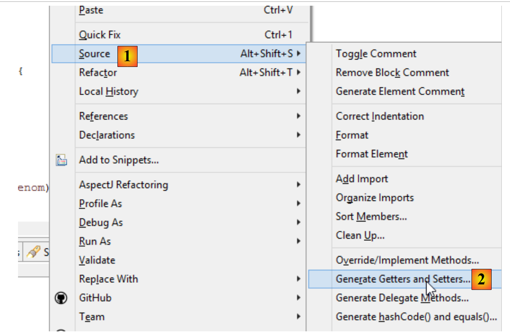 |
2.2.3. Die Klasse [Appartement]
 |
package istia.st.spring.core;
public class Appartement {
// Felder
private Personne proprietaire;
private int surface;
// Getter und Setter
public Personne getProprietaire() {
return proprietaire;
}
public void setProprietaire(Personne proprietaire) {
this.proprietaire = proprietaire;
}
public int getSurface() {
return surface;
}
public void setSurface(int surface) {
this.surface = surface;
}
// toString
public String toString() {
return String.format("Appartement[%s, %s]", proprietaire, surface);
}
}
Hinweis: Diese Klasse verfügt über keinen expliziten Konstruktor. In diesem Fall existiert standardmäßig immer der Konstruktor ohne Parameter, der keine Aktion ausführt. Wenn Konstruktoren definiert werden, existiert dieser Standardkonstruktor nicht mehr implizit. Er muss dann explizit definiert werden:
2.2.4. Die Spring-Konfigurationsdatei
 |
<?xml version="1.0" encoding="UTF-8"?>
<beans xmlns="http://www.springframework.org/schema/beans" xmlns:xsi="http://www.w3.org/2001/XMLSchema-instance" xmlns:util="http://www.springframework.org/schema/util"
xsi:schemaLocation="http://www.springframework.org/schema/beans http://www.springframework.org/schema/beans/spring-beans-4.0.xsd
http://www.springframework.org/schema/utilhttp://www.springframework.org/schema/util/spring-util-4.0.xsd">
<!-- Person 01 -->
<bean id="personne_01" class="istia.st.spring.core.Personne">
<constructor-arg index="0" value="dubois" />
<constructor-arg index="1" value="paul" />
<constructor-arg index="2" value="34" />
</bean>
<!-- Person 02 -->
<bean id="personne_02" class="istia.st.spring.core.Personne">
<property name="nom" value="martin" />
<property name="prenom" value="micheline" />
<property name="age" value="18" />
</bean>
<!-- eine Liste von Personen -->
<util:list id="club">
<ref bean="personne_01" />
<ref bean="personne_02" />
</util:list>
<!-- eine Wohnung -->
<bean id="appartement" class="istia.st.spring.core.Appartement">
<property name="surface" value="100" />
<property name="proprietaire" ref="personne_01" />
</bean>
</beans>
- Zeilen 2, 27: Die Singletons werden innerhalb eines <beans>-Tags definiert;
- Zeilen 6–10: Jedes Singleton wird durch ein <bean>-Tag definiert;
- Zeile 6: [id] ist die Kennung des Singletons. [class] ist der vollständige Name der zu instanziierenden Klasse;
- Zeilen 7–9: Die drei Werte, die an den Konstruktor der Klasse [Personne] übergeben werden sollen;
- Zeilen 12–16: Die Klasse [Personne] wird zunächst mit ihrem Standardkonstruktor [new Personne()] erstellt. Anschließend wird für jedes [property]-Tag ein Setter der Klasse verwendet. In Zeile 13 wird beispielsweise die Methode [setNom("martin")] ausgeführt. Daher muss die Methode [setNom] vorhanden sein. Dies ist ein wichtiger Punkt, den man beachten sollte;
- Zeilen 18–21: Mit dem Tag <util:list> lässt sich ein Singleton definieren, bei dem es sich um eine Liste handelt;
- Zeile 19: Bezieht sich auf das in Zeile 6 definierte Singleton [personne_01]. Hier handelt es sich um eine sogenannte Abhängigkeitsinjektion. Zur Initialisierung des Feldes eines Singletons stehen zwei Attribute zur Verfügung:
- [value]: um dem Feld einen primitiven Wert (Zeichenkette, Zahl, Datum, …) zuzuweisen,
- [ref]: um dem Feld die Referenz eines Spring-Objekts zuzuweisen;
Hinweis: Die Spring-Konfigurationsdatei kann wie folgt generiert werden: [1-4]:
 |
2.2.5. Die ausführbare Klasse
 |
package istia.st.spring.core;
import java.util.ArrayList;
import java.util.List;
import org.springframework.context.ApplicationContext;
import org.springframework.context.support.ClassPathXmlApplicationContext;
public class Demo01 {
@SuppressWarnings({ "unchecked", "resource" })
public static void main(String[] args) {
// Abruf des Spring-Kontexts
ApplicationContext ctx = new ClassPathXmlApplicationContext("config-01.xml");
// die Beans werden abgerufen
Personne p01 = ctx.getBean("personne_01", Personne.class);
Personne p02 = ctx.getBean("personne_02", Personne.class);
List<Personne> club = ctx.getBean("club", new ArrayList<Personne>().getClass());
Appartement appart01 = ctx.getBean(Appartement.class);
// sie werden angezeigt
System.out.println("personnes--------");
System.out.println(p01);
System.out.println(p02);
System.out.println("club--------");
for (Personne p : club) {
System.out.println(p);
}
System.out.println("appartement--------");
System.out.println(appart01);
// Die abgerufenen Beans sind Singletons
// Man kann sie mehrmals abrufen, es wird immer derselbe Bean zurückgegeben
Personne p01b = ctx.getBean("personne_01", Personne.class);
System.out.println(String.format("beans [p01,p01b] identiques ? %s", p01b == p01));
}
}
- Zeile 14: Erstellt den Spring-Kontext. Alle in der Datei [config-01.xml] definierten Singletons werden daraufhin instanziiert;
- Zeile 16: Fordert eine Referenz auf das durch [personne_01] identifizierte Singleton vom Typ [Personne] an. Dieser zweite Parameter ist optional, in diesem Fall erhält man jedoch eine Referenz auf den Typ [Object], die dann in den Typ [Personne] umtypisiert werden muss;
- Zeile 19: Es wird nicht der Name der Bean verwendet, sondern nur ihr Typ, da es nur ein Singleton vom Typ [Appartement] gibt;
- Zeile 18: Hier wurden sowohl die Kennung als auch der Typ des gewünschten Singletons verwendet. Die Kennung ist überflüssig, da es nur ein Singleton vom Typ [new ArrayList<Personne>().getClass()] gibt;
- Zeilen 32–33: zeigen, dass man, wenn man dasselbe Singleton mehrmals abfragt, tatsächlich immer dieselbe Referenz erhält, was belegt, dass es sich tatsächlich um ein Singleton handelt. Dieser Punkt ist wichtig zu verstehen;
Hinweis: Eine ausführbare Klasse kann wie folgt generiert werden: [1-6]:
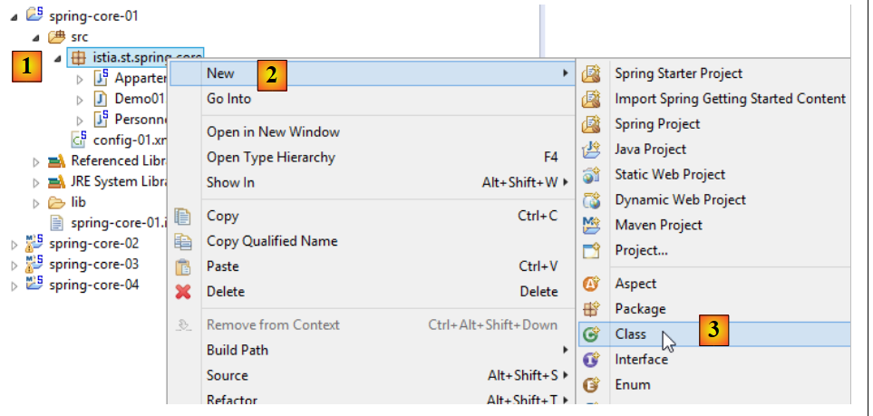 |
 |
- Erst durch das Aktivieren von [6] enthält die generierte Klasse eine statische Methode [main], die sie ausführbar macht;
2.2.6. Die Abhängigkeiten des Projekts
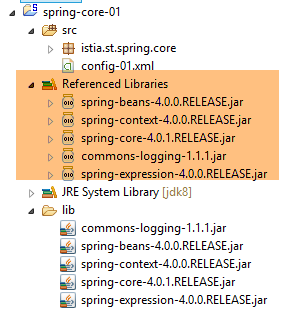 |
- Spring-Abhängigkeiten: [spring-core, spring-beans, spring-context, spring-expression, commons-logging];
Die Abhängigkeiten werden dem Projekt wie folgt hinzugefügt:
 |
- in [1]: Rechtsklick auf das Projekt / [Build Path] / [Configure Build Path];
 |
- in [2]: [Add JARs], wenn sich die hinzuzufügenden JARs in einem Ordner des Projekts befinden. Andernfalls [Add External JARs];
 |
- in [3]: Wählen Sie die JARs aus, die zum ClassPath des Projekts hinzugefügt werden sollen (sie befinden sich hier im Ordner [lib] innerhalb des Projekts);
Definition: Das [ClassPath] eines Projekts ist die Gesamtheit der Ordner, die von der JVM (Java Virtual Machine) durchsucht werden, die das Projekt ausführt, um eine von diesem referenzierte Klasse zu finden. Bei einem Eclipse-Projekt setzt sich der [ClassPath] aus folgenden Elementen zusammen:
- dem Ordner [bin] des Projekts;
- die Elemente des [Build Path] des Projekts;
Der Ordner „[bin]“ ist der Ordner, der durch die Kompilierung des Ordners „[src]“ erzeugt wird. Daher ist alles, was im Ordner „[src]“ abgelegt ist, automatisch Teil von „[ClassPath]“ (auch wenn es sich nicht um eine .java-Datei handelt). Im vorherigen Projekt wird also die Spring-Konfigurationsdatei [config-01.xml], die sich im Ordner [src] befindet, bei der Ausführung Teil des Ordners [Classpath] des Projekts sein.
2.2.7. Die Ergebnisse
févr. 21, 2014 1:16:23 PM org.springframework.context.support.AbstractApplicationContext prepareRefresh
Infos: Refreshing org.springframework.context.support.ClassPathXmlApplicationContext@3ac67f69: startup date [Fri Feb 21 13:16:23 CET 2014]; root of context hierarchy
févr. 21, 2014 1:16:23 PM org.springframework.beans.factory.xml.XmlBeanDefinitionReader loadBeanDefinitions
Infos: Loading XML bean definitions from class path resource [config-01.xml]
personnes--------
Personne[paul, dubois,34]
Personne[micheline, martin,18]
club--------
Personne[paul, dubois,34]
Personne[micheline, martin,18]
appartement--------
Appartement[Personne[paul, dubois,34], 100]
beans [p01,p01b] identiques ? true
2.3. Beispiel-02
2.3.1. Das Eclipse-Projekt
 |
2.3.2. Die Spring-Konfigurationsklasse
package istia.st.spring.core;
import java.util.ArrayList;
import java.util.List;
import org.springframework.context.annotation.Bean;
import org.springframework.context.annotation.Configuration;
@Configuration
public class Config {
@Bean
public Personne personne_01() {
return new Personne("Paul", "Dubois", 34);
}
@Bean
public Personne personne_02() {
return new Personne("Martin", "Micheline", 18);
}
@Bean
public List<Personne> club(Personne personne_01, Personne personne_02) {
List<Personne> personnes = new ArrayList<Personne>();
personnes.add(personne_01);
personnes.add(personne_02);
return personnes;
}
@Bean
public Appartement appartement(Personne personne_01) {
Appartement appartement = new Appartement();
appartement.setSurface(200);
appartement.setPropriétaire(personne_01);
return appartement;
}
}
- Zeile 9: Die Annotation [@Configuration] ist eine Spring-Annotation. Sie gibt an, dass die mit dieser Annotation versehene Klasse Singletons definiert. Diese werden mithilfe der Annotation [@Bean] definiert. Spring führt alle mit [@Bean] annotierten Methoden aus. Diese erstellen die Singletons der Anwendung;
- Zeilen 12–15: Definiert ein Singleton, das durch [personne_01] identifiziert wird, d. h. durch den Namen der Methode.
- Zeile 23: Die Parameter [personne_01, personne_02] tragen die Namen der Singletons. Spring initialisiert sie automatisch mit den Referenzen dieser Singletons. Man spricht dabei von Parameterinjektion;
Diese Art der Konfiguration von Singletons ist expliziter als diejenige, die die Datei XML verwendet. Tatsächlich reproduzieren wir hier selbst, was Spring implizit anhand der Datei XML durchgeführt hat.
2.3.3. Die ausführbare Klasse
 |
package istia.st.spring.core;
import java.util.ArrayList;
import java.util.List;
import org.springframework.context.annotation.AnnotationConfigApplicationContext;
public class Demo02 {
@SuppressWarnings({ "unchecked", "resource" })
public static void main(String[] args) {
// Abruf des Spring-Kontexts
AnnotationConfigApplicationContext ctx = new AnnotationConfigApplicationContext(Config.class);
// die Beans werden abgerufen
Personne p01 = ctx.getBean("personne_01", Personne.class);
Personne p02 = ctx.getBean("personne_02", Personne.class);
List<Personne> club = ctx.getBean("club", new ArrayList<Personne>().getClass());
Appartement appart01 = ctx.getBean(Appartement.class);
// sie werden angezeigt
System.out.println("personnes--------");
System.out.println(p01);
System.out.println(p02);
System.out.println("club--------");
for (Personne p : club) {
System.out.println(p);
}
System.out.println("appartement--------");
System.out.println(appart01);
// Die abgerufenen Beans sind Singletons
// Man kann sie mehrmals abfragen, es wird immer dieselbe Bean abgerufen
Personne p01b = ctx.getBean("personne_01", Personne.class);
System.out.println(String.format("beans [p01,p01b] identiques ? %s", p01b == p01));
}
}
- Zeile 13 bewirkt die Instanziierung aller in der Klasse [Config] definierten Beans;
- der restliche Code bleibt unverändert;
2.3.4. Die Projektabhängigkeiten
 |  |
Die Abhängigkeiten werden durch die folgende Datei „[pom.xml]“ festgelegt:
<project xmlns="http://maven.apache.org/POM/4.0.0" xmlns:xsi="http://www.w3.org/2001/XMLSchema-instance"
xsi:schemaLocation="http://maven.apache.org/POM/4.0.0 http://maven.apache.org/xsd/maven-4.0.0.xsd">
<modelVersion>4.0.0</modelVersion>
<groupId>istia.st.spring.core</groupId>
<artifactId>spring-core-02</artifactId>
<version>0.0.1-SNAPSHOT</version>
<name>spring-core-02</name>
<description>Introduction à Spring</description>
<properties>
<project.build.sourceEncoding>UTF-8</project.build.sourceEncoding>
<java.version>1.7</java.version>
</properties>
<dependencies>
<!-- Spring -->
<dependency>
<groupId>org.springframework</groupId>
<artifactId>spring-context</artifactId>
<version>4.1.3.RELEASE</version>
</dependency>
</dependencies>
<!-- Plugins -->
<build>
<plugins>
<plugin>
<artifactId>maven-assembly-plugin</artifactId>
<configuration>
<descriptorRefs>
<descriptorRef>jar-with-dependencies</descriptorRef>
</descriptorRefs>
</configuration>
</plugin>
<plugin>
<groupId>org.apache.maven.plugins</groupId>
<artifactId>maven-surefire-plugin</artifactId>
<version>2.18.1</version>
</plugin>
</plugins>
</build>
</project>
Die manuelle Verwaltung der Abhängigkeiten eines Projekts wird zu einer Herausforderung, wenn Java-Bibliotheken verwendet werden, deren Abhängigkeiten unbekannt sind. So hat beispielsweise das Framework [Hibernate], das den Zugriff auf Datenbanken verwaltet, Dutzende von Abhängigkeiten. Das Projekt [Maven] löst dieses Problem. Man gibt die benötigte Abhängigkeit an. Diese wird automatisch in Maven-Repositorys im Internet gesucht. Wenn die angeforderte Abhängigkeit selbst Abhängigkeiten hat, werden diese ebenfalls automatisch heruntergeladen. Diese heruntergeladenen Abhängigkeiten werden in einem lokalen Repository auf dem Rechner gespeichert. Wenn eine andere Anwendung später dieselbe Abhängigkeit benötigt, wird diese nicht erneut heruntergeladen, sondern im lokalen Repository gesucht. Eine Abhängigkeit ist durch folgende Elemente gekennzeichnet:
- Zeile 17: ein <dependency>-Tag;
- Zeile 18: ein Attribut [groupId], das in der Regel das Unternehmen identifiziert, das die Abhängigkeit erstellt hat;
- Zeile 19: ein Attribut [artifactId], das die Abhängigkeit identifiziert;
- Zeile 20: ein Attribut [version], das die gewünschte Version identifiziert;
Die Projektgenerierung erzeugt ihrerseits eine Maven-Komponente, die durch die Zeilen 4–8 definiert wird:
- Zeilen 4–6: die soeben beschriebenen Attribute [ groupId, artifactId,version];
- Zeilen 7–8: sind optionale Attribute;
Wir werden etwas später noch einmal auf die Rolle der Zeilen 24–40 zurückkommen. Um ein gewöhnliches Eclipse-Projekt in ein Maven-Projekt umzuwandeln, müssen zwei Schritte durchgeführt werden:
- die oben genannte Datei „[pom.xml]“ erstellen;
- deklarieren, dass das Projekt nun ein Maven-Projekt ist ([1-4]):
 |
Das Symbol eines Maven-Projekts enthält ein „M“ ([4]). Das „S“ zeigt an, dass das Projekt Spring-Komponenten enthält. Es wird davon abgeraten, ein Eclipse-Projekt (wie wir es gerade getan haben) in ein Maven-Projekt umzuwandeln, da das Projekt dann nicht die für ein Maven-Projekt erwartete Struktur aufweist, was manchmal zu unerwarteten Problemen führen kann.
2.3.5. Erstellung des Maven-Artefakts des Projekts
Als Maven-Artefakt des Projekts bezeichnen wir das Element, das in den Zeilen 4–6 der Datei [pom.xml] definiert ist:
<groupId>istia.st.spring.core</groupId>
<artifactId>spring-core-02</artifactId>
<version>0.0.1-SNAPSHOT</version>
Um dieses Artefakt zu generieren, müssen die folgenden Zeilen 3–7 in der Datei [pom.xml] vorhanden sein:
<build>
<plugins>
<plugin>
<groupId>org.apache.maven.plugins</groupId>
<artifactId>maven-surefire-plugin</artifactId>
<version>2.18.1</version>
</plugin>
</plugins>
</build>
Sie definieren das Maven-Plugin, mit dem das Projekt-Artefakt generiert werden kann. Anschließend geht man wie folgt vor:
 |
Das so generierte Artefakt wird in das lokale Maven-Repository kopiert. Den Speicherort finden Sie in der Eclipse-Konfiguration:
 |
Anschließend kann überprüft werden, ob das Maven-Artefakt korrekt installiert wurde:
 |
Von nun an kann ein anderes lokales Maven-Projekt dieses Archiv nutzen.
2.4. Beispiel-03
2.4.1. Das Eclipse-Projekt
Diesmal erstellen wir ein Maven-Projekt mit dem Namen [1-8]:
 |
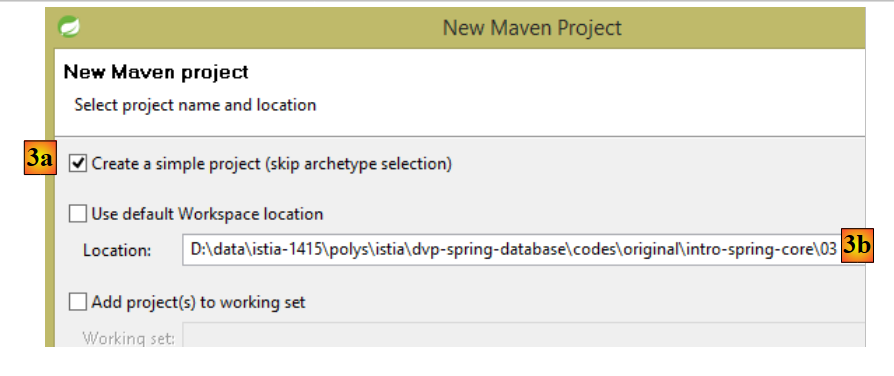 |
- in [3b]: Geben Sie einen leeren Ordner an, in dem das Projekt erstellt werden soll;
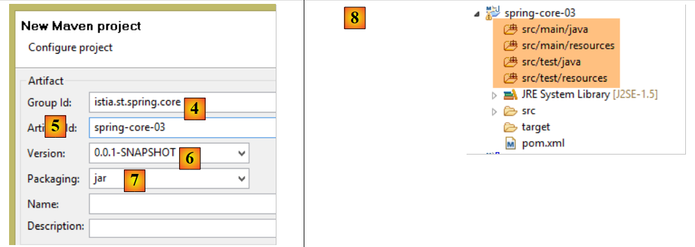 |
- in [4]: die ID der Maven-Gruppe, zu der das Projekt gehören soll;
- in [5]: den Namen des erzeugten Maven-Artefakts;
- in [6]: dessen Version;
- in [7]: sein Verpackungsmodus (es gibt auch war, ear, apk, ...);
- in [8]: das so erstellte Projekt;
Ein Maven-Projekt hat standardmäßig eine bestimmte Verzeichnisstruktur:
- [src / main / java]: den Quellcode des Projekts. Die aus diesen Quellen kompilierten Ergebnisse werden in den Ordner [target/classes] des Projekts kopiert;
- [src / main / resources]: die Ressourcen, die sich im Classpath des Projekts befinden müssen, ohne jedoch Java-Quellcode zu sein. Sie werden unverändert in den Ordner [target/classes] des Projekts kopiert;
- [src / test / java]: Der Quellcode der Tests des Projekts. Die aus diesen Quellen kompilierten Ergebnisse werden in den Ordner [target/test-classes] des Projekts verschoben. Diese Elemente werden nicht in das Maven-Archiv des Projekts integriert;
- [src / test / resources]: Ressourcen, die für die Tests im Classpath des Projekts vorhanden sein müssen, ohne dabei Java-Quelldateien zu sein. Sie werden unverändert in den Ordner „[target/test-classes]“ des Projekts kopiert;
Wir ergänzen das Projekt wie folgt:
 |
2.4.2. Die Maven-Konfiguration
Standardmäßig wird eine Datei „[pom.xml]“ generiert. Diese passen wir wie folgt an:
<project xmlns="http://maven.apache.org/POM/4.0.0" xmlns:xsi="http://www.w3.org/2001/XMLSchema-instance"
xsi:schemaLocation="http://maven.apache.org/POM/4.0.0 http://maven.apache.org/xsd/maven-4.0.0.xsd">
<modelVersion>4.0.0</modelVersion>
<groupId>istia.st.spring.core</groupId>
<artifactId>spring-core-03</artifactId>
<version>0.0.1-SNAPSHOT</version>
<name>spring-core-03</name>
<description>Introduction à Spring</description>
<properties>
<project.build.sourceEncoding>UTF-8</project.build.sourceEncoding>
<java.version>1.8</java.version>
</properties>
<!-- übergeordnetes Maven-Projekt -->
<parent>
<groupId>org.springframework.boot</groupId>
<artifactId>spring-boot-starter-parent</artifactId>
<version>1.2.3.RELEASE</version>
</parent>
<dependencies>
<!-- Spring-Kontext -->
<dependency>
<groupId>org.springframework</groupId>
<artifactId>spring-context</artifactId>
</dependency>
<!-- Protokolle -->
<dependency>
<groupId>org.springframework.boot</groupId>
<artifactId>spring-boot-starter-logging</artifactId>
</dependency>
</dependencies>
<!-- Plugins -->
<build>
<plugins>
<!-- zur Erstellung des Projektarchivs mit seinen Abhängigkeiten -->
<plugin>
<artifactId>maven-assembly-plugin</artifactId>
<configuration>
<descriptorRefs>
<descriptorRef>jar-with-dependencies</descriptorRef>
</descriptorRefs>
</configuration>
</plugin>
<!-- zur Installation des Projekt-Artefakts im lokalen Maven-Repository -->
<plugin>
<groupId>org.apache.maven.plugins</groupId>
<artifactId>maven-surefire-plugin</artifactId>
<version>2.18.1</version>
</plugin>
</plugins>
</build>
</project>
- Zeile 11: Das Projekt ist in UTF-8 kodiert;
- Zeile 12: Zum Kompilieren des Projekts wird ein JDK 1.8 verwendet;
- Zeilen 16–20: Bei Projekten, die Spring-Bibliotheken verwenden, ist es sinnvoll, ein übergeordnetes Maven-Projekt namens [spring-boot-starter-parent] zu verwenden. Dieses definiert die Versionen verschiedener Spring-Bibliotheken sowie deren Abhängigkeiten. Dadurch müssen diese nicht mehr in der Abhängigkeitsdefinition angegeben werden. Daher wird in den Zeilen 24–27 die gewünschte Version von [spring-context] nicht angegeben. Es wird diejenige verwendet, die vom übergeordneten Projekt [spring-boot-starter-parent] definiert wurde. Dank dieser Vorgehensweise muss man sich keine Gedanken über mögliche Versionsinkompatibilitäten zwischen den Abhängigkeiten machen. Die vom übergeordneten Projekt definierten Versionen sind untereinander kompatibel;
- Zeilen 29–32: Spring gibt über eine Logging-Bibliothek eine Vielzahl von Informationen in die Konsole aus. Diese wird hier importiert;
- Zeilen 40–47: ein Maven-Plugin, auf das wir noch zurückkommen werden;
- Zeilen 50–52: Das Plugin zur Generierung des Maven-Artefakts des Projekts;
2.4.3. Die Spring-Konfigurationsklasse
 |
Die Klasse [Config] sieht wie folgt aus:
package istia.st.spring.core.config;
import istia.st.spring.core.entities.Personne;
import java.util.ArrayList;
import java.util.List;
import org.springframework.context.annotation.Bean;
import org.springframework.context.annotation.ComponentScan;
import org.springframework.context.annotation.Configuration;
@Configuration
@ComponentScan({ "spring.core.entities" })
public class Config {
@Bean
public Personne personne_01() {
return new Personne("Paul", "Dubois", 34);
}
@Bean
public Personne personne_02() {
return new Personne("Martin", "Micheline", 18);
}
@Bean
public List<Personne> club(Personne personne_01, Personne personne_02) {
List<Personne> personnes = new ArrayList<Personne>();
personnes.add(personne_01);
personnes.add(personne_02);
return personnes;
}
@Bean
public int mySurface() {
return 200;
}
}
- Hier finden wir bereits kommentierten Code mit zwei Neuerungen:
- Zeile 13: gibt an, dass im Paket [spring.core.entities] weitere Beans instanziiert werden müssen,
- Zeilen 34–37: ein Bean [mySurface];
2.4.4. Die Klasse [Appartement]
 |
package spring.core.entities;
import org.springframework.beans.factory.annotation.Autowired;
import org.springframework.beans.factory.annotation.Qualifier;
import org.springframework.stereotype.Component;
@Component
public class Appartement {
// von Spring injizierte Felder
@Autowired
@Qualifier("personne_01")
private Personne propriétaire;
@Autowired
@Qualifier("mySurface")
private int surface;
// Getter und Setter
public Personne getPropriétaire() {
return propriétaire;
}
public void setPropriétaire(Personne propriétaire) {
this.propriétaire = propriétaire;
}
public int getSurface() {
return surface;
}
public void setSurface(int surface) {
this.surface = surface;
}
// toString
public String toString() {
return String.format("Appartement[%s, %s]", propriétaire, surface);
}
}
- Zeile 7: Die Annotation [@Component] teilt Spring mit, dass es sich bei der Klasse um ein Singleton handelt, das das Framework instanziieren und verwalten muss. Da wir in der Klasse [Config] [@ComponentScan({ "istia.st.spring.core.entities" })] geschrieben haben, wird dieses Singleton gefunden;
- Zeile 11: Fordert Spring auf, die Referenz eines der Singletons in das Feld zu injizieren. Diese kann auf zwei Arten definiert werden:
- über seine Kennung (Zeilen 12, 16),
- über seinen Typ, sofern es nur ein Singleton dieses Typs gibt;
2.4.5. Ausführung des Projekts
Die Ausführung des Projekts liefert das folgende Ergebnis in der Konsole:
- Zeilen 1–3: Spring generiert eine sehr große Anzahl von Log-Einträgen, mehrere Dutzend Zeilen. Diese Log-Einträge können beim Debuggen eines nicht funktionierenden Projekts sehr hilfreich sein. Wenn das Projekt funktioniert, lassen sich die Log-Einträge wie folgt reduzieren:
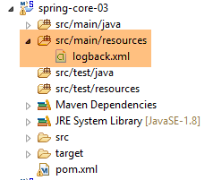 |
Im Ordner „[src / main / resources]“ erstellen wir die folgende Datei „[logback.xml]“:
<configuration>
<appender name="STDOUT" class="ch.qos.logback.core.ConsoleAppender">
<!-- Encodern wird standardmäßig der Typ zugewiesen
ch.qos.logback.classic.encoder.PatternLayoutEncoder -->
<encoder>
<pattern>%d{HH:mm:ss.SSS} [%thread] %-5level %logger{36} - %msg%n</pattern>
</encoder>
</appender>
<!-- Steuerung der Protokollierungsstufe -->
<root level="info"> <!-- Info, Debug, Warn -->
<appender-ref ref="STDOUT" />
</root>
</configuration>
- In Zeile 12 wird die Protokollierungsstufe festgelegt. [debug] ist eine sehr detaillierte Stufe, [info] deutlich weniger;
Hier sind die Ergebnisse mit [level=info]:
Es gibt nur noch eine Zeile im Protokoll.
2.4.6. Erstellung des Projektarchivs mit seinen Abhängigkeiten
Das im vorherigen Projekt erstellte Archiv kann auch von einem Eclipse-Projekt ohne Maven verwendet werden. Manche Projekte nutzen zahlreiche Bibliotheken, und es kann schwierig sein, keine davon zu vergessen. Hier leistet Maven hervorragende Arbeit, denn es reicht aus, die Abhängigkeit der obersten Ebene anzugeben, damit die anderen auf niedrigeren Ebenen automatisch zum Classpath des Projekts hinzugefügt werden. Wenn ein Eclipse-Projekt ohne Maven die Archive eines Maven-Projekts verwenden muss, ist es möglich, das Artefakt des Maven-Projekts mit all seinen Abhängigkeiten zu generieren (was im vorherigen Projekt nicht der Fall war). Für diese Generierung müssen die folgenden Zeilen 3–10 in der Datei [pom.xml] vorhanden sein:
<build>
<plugins>
<plugin>
<artifactId>maven-assembly-plugin</artifactId>
<configuration>
<descriptorRefs>
<descriptorRef>jar-with-dependencies</descriptorRef>
</descriptorRefs>
</configuration>
</plugin>
<plugin>
<groupId>org.apache.maven.plugins</groupId>
<artifactId>maven-surefire-plugin</artifactId>
<version>2.18.1</version>
</plugin>
</plugins>
</build>
Sie definieren das Maven-Plugin, mit dem das Projekt-Artefakt samt seiner Abhängigkeiten generiert werden kann. Anschließend geht man wie folgt vor: [1-6]:
 |
 |
- [4-6] steht für eine Maven-Ausführungskonfiguration;
- Geben Sie in „[4]“ einen beliebigen Namen ein;
- Geben Sie in [5] den Projektordner an;
- in [6] die Maven-Ziele (Goals) eingeben:
- [clean]: Der Projektordner [target] wird gelöscht;
- [compile]: Das Projekt wird kompiliert. Die Kompilierungsergebnisse werden in einem neu erstellten Ordner [target] abgelegt;
- [assembly:single]: Die Klassen des Projekts und seiner Abhängigkeiten werden in einem einzigen JAR-Archiv im Ordner [target] abgelegt;
Nach der Ausführung erhält man das folgende Ergebnis:
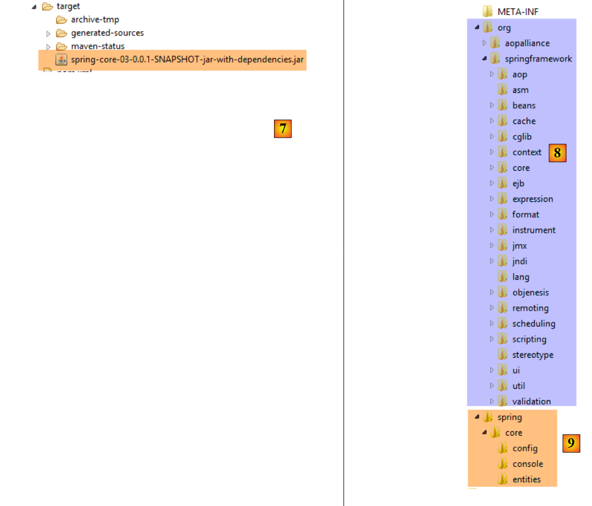 |
Ein JAR-Archiv ist eine ZIP-Datei, die man daher mit einem Entpacker öffnen kann. Nach dem Entpacken des oben genannten Archivs erhält man die folgende Verzeichnisstruktur:
- in „[8]“ die Klassen der Projektabhängigkeiten;
- in [9] die Klassen des Projekts selbst;
2.5. Beispiel-04
2.5.1. Ziel
Dieses Beispiel greift eines der im Dokument [Introduction à Spring IoC] vorgestellten Beispiele auf, in dem der Beitrag von Spring zur Konfiguration mehrschichtiger Architekturen gezeigt wird. Im Originaldokument wird das Beispiel mit einer Spring-Konfiguration behandelt, die mithilfe einer Datei namens XML erstellt wurde. Hier behandeln wir das Beispiel mit einer Konfiguration mittels Java-Klassen und Annotationen.
Wir möchten hier ein Spring-Projekt für die folgende Architektur konfigurieren:
 |
Jede Schicht verfügt über eine Schnittstelle, die mit zwei Klassen implementiert ist. Wir möchten zeigen, dass man dank Spring die Implementierung einer Schicht ändern kann, ohne dass dies Auswirkungen auf den Code der anderen Schichten hat.
2.5.2. Das Eclipse-Projekt
2.5.2.1. Génération
Wir erstellen einen neuen Projekttyp:
 |
 |
- Geben Sie in „[4]“ den Namen des Eclipse-Projekts ein;
- in [5] ein Maven-Projekt auswählen;
- in [6] wählen Sie eine Java-Version >=1.7 aus;
- in [7] die vorgeschlagene Spring-Boot-Version auswählen;
- Die Angaben in [8-11] sind Maven-Informationen;
- In [12] können Sie eine oder mehrere der vorgeschlagenen Abhängigkeiten auswählen. Dadurch werden eine Reihe von Abhängigkeiten in die Maven-Datei [pom.xml] integriert;
 |
- In [13] geben Sie einen vorhandenen, leeren Ordner an, in dem das Projekt abgelegt werden soll;
- in [14] das generierte Projekt. Wir werden die einzelnen Elemente genauer betrachten;
Das Projekt ist ein Maven-Projekt, das durch die folgende Datei „[pom.xml]“ konfiguriert wird:
<?xml version="1.0" encoding="UTF-8"?>
<project xmlns="http://maven.apache.org/POM/4.0.0" xmlns:xsi="http://www.w3.org/2001/XMLSchema-instance"
xsi:schemaLocation="http://maven.apache.org/POM/4.0.0 http://maven.apache.org/xsd/maven-4.0.0.xsd">
<modelVersion>4.0.0</modelVersion>
<groupId>istia.st.spring.core</groupId>
<artifactId>spring-core-04</artifactId>
<version>0.0.1-SNAPSHOT</version>
<packaging>jar</packaging>
<name>spring-core-04</name>
<description>Programmation par interfaces</description>
<parent>
<groupId>org.springframework.boot</groupId>
<artifactId>spring-boot-starter-parent</artifactId>
<version>1.2.3.RELEASE</version>
<relativePath/> <!-- Übergeordnetes Element aus dem Repository nachschlagen -->
</parent>
<properties>
<project.build.sourceEncoding>UTF-8</project.build.sourceEncoding>
<start-class>demo.SpringCore04Application</start-class>
<java.version>1.8</java.version>
</properties>
<dependencies>
<dependency>
<groupId>org.springframework.boot</groupId>
<artifactId>spring-boot-starter</artifactId>
</dependency>
<dependency>
<groupId>org.springframework.boot</groupId>
<artifactId>spring-boot-starter-test</artifactId>
<scope>test</scope>
</dependency>
</dependencies>
<build>
<plugins>
<plugin>
<groupId>org.springframework.boot</groupId>
<artifactId>spring-boot-maven-plugin</artifactId>
</plugin>
</plugins>
</build>
</project>
- Zeilen 6–12: enthalten die im Projekt-Assistenten eingegebenen Informationen;
- Zeilen 14–19: Das übergeordnete Maven-Projekt, das eine Reihe von Bibliotheken mit ihren Versionen definiert. Ist eine davon eine Abhängigkeit des Projekts, wird sie in der Datei [pom.xml] ohne Versionsangabe aufgeführt;
- Zeile 23: Diese Zeile wird nur benötigt, wenn beabsichtigt ist, ein ausführbares Archiv des Projekts zu erstellen. Andernfalls bleibt sie ungenutzt;
- Zeilen 28–31: Die Mindestabhängigkeiten eines Spring-Boot-Projekts. Zur Erinnerung: Wir haben in der Auswahlliste keine Abhängigkeiten ausgewählt;
- Zeilen 33–37: Die erforderliche Abhängigkeit zur Verwaltung von in Spring integrierten Unit-Tests (JUnit, [http://junit.org/]). Zeile 36 gibt an, dass die Abhängigkeit nur für die Tests benötigt wird. Folglich wird sie nicht in das Projektarchiv aufgenommen;
- Zeilen 42–45: Das Plugin, mit dem das Maven-Artefakt des Projekts generiert wird;
Die Liste der von dieser Datei bereitgestellten Abhängigkeiten lautet wie folgt: [1]:
 |
Wir werden sehen, dass diese für unsere Zwecke hier ausreichen.
2.5.2.2. Die ausführbare Klasse
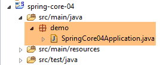 |
Die ausführbare Klasse [SpringCore04Application] [[2] sieht wie folgt aus:
package demo;
import org.springframework.boot.SpringApplication;
import org.springframework.boot.autoconfigure.SpringBootApplication;
@SpringBootApplication
public class SpringCore04Application {
public static void main(String[] args) {
SpringApplication.run(SpringCore04Application.class, args);
}
}
- Zeile 6: Die Annotation [@SpringBootApplication] ist eine Abkürzung für die drei Annotationen [@Configuration, @EnableAutoConfiguration, @ComponentScan], was bedeutet:
- dass die Klasse [SpringCore04Application] eine Spring-Konfigurationsklasse ist;
- dass Spring Boot angewiesen wird, Konfigurationen anhand der Klassen vorzunehmen, die es im Classpath des Projekts findet, also hier in den Maven-Abhängigkeiten;
- das aktuelle Verzeichnis (das der Klasse [SpringCore04Application]) zu durchsuchen, um dort eventuelle weitere Spring-Komponenten zu finden;
- Zeile 10: Die statische Methode [SpringApplication.run] wird ausgeführt. Ihr erster Parameter ist eine Spring-Konfigurationsklasse, hier die Klasse [SpringCore04Application]. Ihr zweiter Parameter ist hier die Liste der Argumente, die an die Methode [main] (Zeile 9) übergeben wurden. Die statische Methode [SpringApplication.run] hat die Aufgabe, den Spring-Kontext zu erstellen, d. h. die verschiedenen Beans zu erstellen, die entweder in den Konfigurationsklassen oder in den durch die Annotation [@ComponentScan] durchsuchten Ordnern gefunden werden. Die Methode [main] tut hier nichts weiter. Um ihr etwas mehr Substanz zu verleihen, werden wir sie wie folgt umgestalten:
package demo;
import org.springframework.boot.SpringApplication;
import org.springframework.boot.autoconfigure.SpringBootApplication;
import org.springframework.context.ConfigurableApplicationContext;
@SpringBootApplication
public class SpringCore04Application {
public static void main(String[] args) {
// Instanziierung des Spring-Kontexts
ConfigurableApplicationContext context = SpringApplication.run(SpringCore04Application.class, args);
// Anzeige des Kontexts
System.out.println("---------------- Liste des beans Spring");
for (String beanName : context.getBeanDefinitionNames()) {
System.out.println(beanName);
}
// Schließen des Kontexts
context.close();
}
}
- Zeile 12: Die statische Methode [SpringApplication.run] gibt den von ihr erstellten Spring-Kontext zurück;
- Zeilen 15–17: Wir geben die Namen aller Beans dieses Kontexts aus;
Die Anwendung kann wie folgt ausgeführt werden: [1-3]. Die übliche Methode [Run As Java Application] ist ebenfalls gültig.
 |
Man erhält folgendes Ergebnis:
. ____ _ __ _ _
/\\ / ___'_ __ _ _(_)_ __ __ _ \ \ \ \
( ( )\___ | '_ | '_| | '_ \/ _` | \ \ \ \
\\/ ___)| |_)| | | | | || (_| | ) ) ) )
' |____| .__|_| |_|_| |_\__, | / / / /
=========|_|==============|___/=/_/_/_/
:: Spring Boot :: (v1.2.3.RELEASE)
2015-04-08 11:18:38.254 INFO 4796 --- [ main] demo.SpringCore04Application : Starting SpringCore04Application on Gportpers3 with PID 4796 (D:\data\istia-1415\polys\istia\dvp-spring-database\codes\original\intro-spring-core\spring-core-04\target\classes started by ST in D:\data\istia-1415\polys\istia\dvp-spring-database\codes\original\intro-spring-core\spring-core-04)
2015-04-08 11:18:38.295 INFO 4796 --- [ main] s.c.a.AnnotationConfigApplicationContext : Refreshing org.springframework.context.annotation.AnnotationConfigApplicationContext@64485a47: startup date [Wed Apr 08 11:18:38 CEST 2015]; root of context hierarchy
2015-04-08 11:18:38.776 INFO 4796 --- [ main] o.s.j.e.a.AnnotationMBeanExporter : Registering beans for JMX exposure on startup
2015-04-08 11:18:38.788 INFO 4796 --- [ main] demo.SpringCore04Application : Started SpringCore04Application in 0.773 seconds (JVM running for 1.335)
---------------- Liste des beans Spring
org.springframework.context.annotation.internalConfigurationAnnotationProcessor
org.springframework.context.annotation.internalAutowiredAnnotationProcessor
org.springframework.context.annotation.internalRequiredAnnotationProcessor
org.springframework.context.annotation.internalCommonAnnotationProcessor
springCore04Application
org.springframework.context.annotation.ConfigurationClassPostProcessor.importAwareProcessor
org.springframework.context.annotation.ConfigurationClassPostProcessor.enhancedConfigurationProcessor
org.springframework.boot.autoconfigure.AutoConfigurationPackages
org.springframework.boot.autoconfigure.PropertyPlaceholderAutoConfiguration
org.springframework.boot.autoconfigure.condition.BeanTypeRegistry
propertySourcesPlaceholderConfigurer
org.springframework.boot.autoconfigure.jmx.JmxAutoConfiguration
mbeanExporter
objectNamingStrategy
mbeanServer
2015-04-08 11:18:38.789 INFO 4796 --- [ main] s.c.a.AnnotationConfigApplicationContext : Closing org.springframework.context.annotation.AnnotationConfigApplicationContext@64485a47: startup date [Wed Apr 08 11:18:38 CEST 2015]; root of context hierarchy
2015-04-08 11:18:38.790 INFO 4796 --- [ main] o.s.j.e.a.AnnotationMBeanExporter : Unregistering JMX-exposed beans on shutdown
- Zeilen 14–28: die Beans des Spring-Kontexts. Ihre Funktion ist uns nicht bekannt. In Zeile 18 finden wir die Bean [springCore04Application], die aufgrund ihrer Annotation [@SpringBootApplication] automatisch zu einer Spring-Bean wird;
- die übrigen Zeilen sind Spring-Protokolleinträge der Stufe [INFO]. Wie wir bereits gesehen haben, können diese Protokolleinträge über die Datei [logback.xml] gesteuert werden, die sich im Classpath des Projekts befindet:
 |
<configuration>
<appender name="STDOUT" class="ch.qos.logback.core.ConsoleAppender">
<!-- Encodern wird standardmäßig der Typ zugewiesen
ch.qos.logback.classic.encoder.PatternLayoutEncoder -->
<encoder>
<pattern>%d{HH:mm:ss.SSS} [%thread] %-5level %logger{36} - %msg%n</pattern>
</encoder>
</appender>
<!-- Steuerung der Protokollierungsstufe -->
<root level="warn"> <!-- Info, Debug, Warn -->
<appender-ref ref="STDOUT" />
</root>
</configuration>
Wenn man in Zeile 12 oben die Stufe [warn] anstelle von [info] einsetzt, erhält man folgendes Ergebnis:
Die Protokolle sind verschwunden. Es werden nur Meldungen der Stufe [warn] angezeigt, und hier gab es keine.
2.5.3. Implementierung der verschiedenen Schichten der Architektur
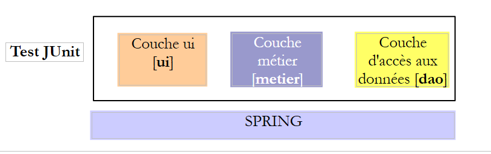 |
Wir werden nun die drei Schichten der oben genannten Architektur implementieren:
 |
Die Schicht [DAO] wird durch das Paket [spring.core.dao] implementiert. Sie verfügt über die folgende Schnittstelle [IDao]:
package spring.core.dao;
public interface IDao {
public int doSomethingInDaoLayer(int a, int b);
}
Diese Schnittstelle hat zwei Implementierungen: [Dao1] und [Dao2]:
package spring.core.dao;
public class Dao1 implements IDao {
public int doSomethingInDaoLayer(int a, int b) {
return a+b;
}
}
package spring.core.dao;
public class Dao2 implements IDao {
public int doSomethingInDaoLayer(int a, int b) {
return a-b;
}
}
Die Schicht [métier] wird durch das Paket [spring.core.metier] implementiert. Sie weist die folgende Schnittstelle [IMetier] auf:
package spring.core.metier;
public interface IMetier {
public int doSomethingInMetierLayer(int a, int b);
}
Diese Schnittstelle hat zwei Implementierungen: [Metier1] und [Metier2]:
package spring.core.metier;
import spring.core.dao.IDao;
public class Metier1 implements IMetier {
private IDao dao;
public int doSomethingInMetierLayer(int a, int b) {
a++;
b++;
return dao.doSomethingInDaoLayer(a, b);
}
public void setDao(IDao dao) {
this.dao = dao;
}
}
package spring.core.metier;
import spring.core.dao.IDao;
public class Metier2 implements IMetier {
private IDao dao;
public int doSomethingInMetierLayer(int a, int b) {
a--;
b++;
return dao.doSomethingInDaoLayer(a, b);
}
public void setDao(IDao dao) {
this.dao = dao;
}
}
Die Schicht [UI] wird durch das Paket [spring.core.ui] implementiert. Sie weist die folgende Schnittstelle [IUi] auf:
package spring.core.ui;
public interface IUi {
public int doSomethingInUiLayer(int a, int b);
}
Diese Schnittstelle hat zwei Implementierungen: [Ui1] und [Ui2]:
package spring.core.ui;
import spring.core.metier.IMetier;
public class Ui1 implements IUi {
private IMetier metier;
public int doSomethingInUiLayer(int a, int b) {
a++;
b++;
return metier.doSomethingInMetierLayer(a, b);
}
public void setMetier(IMetier metier) {
this.metier = metier;
}
}
package spring.core.ui;
import spring.core.metier.IMetier;
public class Ui2 implements IUi {
private IMetier metier;
public int doSomethingInUiLayer(int a, int b) {
a--;
b++;
return metier.doSomethingInMetierLayer(a, b);
}
public void setMetier(IMetier metier) {
this.metier = metier;
}
}
2.5.4. Konfiguration des Spring-Projekts
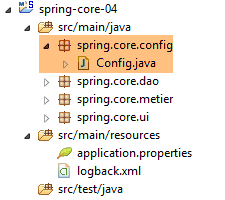 |
Die Konfigurationsklasse [Config] lautet wie folgt:
package spring.core.config;
import org.springframework.context.annotation.Bean;
import org.springframework.context.annotation.Configuration;
import spring.core.dao.Dao1;
import spring.core.dao.Dao2;
import spring.core.dao.IDao;
import spring.core.metier.IMetier;
import spring.core.metier.Metier1;
import spring.core.metier.Metier2;
import spring.core.ui.IUi;
import spring.core.ui.Ui1;
import spring.core.ui.Ui2;
@Configuration
public class Config {
// -------------- Implementierung [Ui1, Metier1, Dao1]
@Bean
public IDao dao1() {
return new Dao1();
}
@Bean
public IMetier metier1(IDao dao1) {
Metier1 metier = new Metier1();
metier.setDao(dao1);
return metier;
}
@Bean
public IUi ui1(IMetier metier1) {
Ui1 ui = new Ui1();
ui.setMetier(metier1);
return ui;
}
// -------------- Implementierung [Ui2, Metier2, Dao2]
@Bean
public IDao dao2() {
return new Dao2();
}
@Bean
public IMetier metier2(IDao dao2) {
Metier2 metier = new Metier2();
metier.setDao(dao2);
return metier;
}
@Bean
public IUi ui2(IMetier metier2) {
Ui2 ui = new Ui2();
ui.setMetier(metier2);
return ui;
}
}
- Zeilen 20–23: Die Bean mit dem Namen [dao1] (Name der Methode) ist eine Instanz der Klasse [Dao1] (Zeile 22), die als Implementierung der Schnittstelle [IDao] (Zeile 21) angesehen. Die Bean [dao1] wird daher als Instanz einer Schnittstelle (die Terminologie ist zwar nicht korrekt, aber verständlich) und nicht als Instanz einer Klasse betrachtet. Dies ist ein wichtiger Punkt, den es zu verstehen gilt. Alle anderen Beans sind ebenfalls Instanzen von Schnittstellen;
- Zeilen 25–30: eine Instanz der Schnittstelle [IMetier], die von der Klasse [Metier1] implementiert wird;
- Zeilen 32–37: eine Instanz der Schnittstelle [IUi], die von der Klasse [Ui1] implementiert wird;
- Zeilen 20–37: implementieren die Schichten [UI, Metier, DAO] mit Instanzen von [Ui1, Metier1, Dao1];
- Zeilen 40–57: implementieren die Schichten [UI, Metier, DAO] mit Instanzen von [Ui2, Metier2, Dao2];
2.5.5. Einzeltest [JUnitTest]
 |
Die Klasse [JUnitTest] befindet sich im Zweig [src / test / java] des Maven-Projekts. Die Elemente dieses Zweigs werden nicht in das endgültige Projektarchiv aufgenommen. Der Code lautet wie folgt:
package spring.core.tests;
import org.junit.Assert;
import org.junit.Test;
import org.junit.runner.RunWith;
import org.springframework.beans.factory.annotation.Autowired;
import org.springframework.beans.factory.annotation.Qualifier;
import org.springframework.boot.test.SpringApplicationConfiguration;
import org.springframework.test.context.junit4.SpringJUnit4ClassRunner;
import spring.core.config.Config;
import spring.core.dao.IDao;
import spring.core.metier.IMetier;
import spring.core.ui.IUi;
@SpringApplicationConfiguration(classes = { Config.class })
@RunWith(SpringJUnit4ClassRunner.class)
public class JUnitTest {
...
}
- Zeile 16: Die Annotation [@SpringApplicationConfiguration] ist eine Annotation des Spring Boot Test-Projekts (Zeile 8). Sie wird durch die folgende Abhängigkeit der Datei [pom.xml] bereitgestellt:
<dependency>
<groupId>org.springframework.boot</groupId>
<artifactId>spring-boot-starter</artifactId>
</dependency>
Diese Annotation hat als Parameter die Liste der Konfigurationsklassen, die zum Aufbau des für den Test erforderlichen Spring-Kontexts verwendet werden sollen. Hier verwenden wir die bereits vorgestellte Konfigurationsklasse [Config];
- Zeile 17: Die Annotation [@RunWith] ist eine Annotation der Klasse JUnit (Zeile 5). Ihr Parameter ist die Klasse, die anstelle der Standardklasse des JUnit-Frameworks die Tests durchführt. Diese Klasse ist eine Spring-Klasse (Zeile 9). Sie wird die in der Testklasse vorhandenen Spring-Annotationen verwenden;
Die vollständige Klasse lautet wie folgt
...
@SpringApplicationConfiguration(classes = { Config.class })
@RunWith(SpringJUnit4ClassRunner.class)
public class JUnitTest {
// Schicht [UI]
@Autowired
@Qualifier("ui1")
private IUi ui1;
@Autowired
@Qualifier("ui2")
private IUi ui2;
// Schicht [métier]
@Autowired
@Qualifier("metier1")
private IMetier metier1;
@Autowired
@Qualifier("metier2")
private IMetier metier2;
// Schicht [dao]
@Autowired
@Qualifier("dao1")
private IDao dao1;
@Autowired
@Qualifier("dao2")
private IDao dao2;
@Test
public void testDao() {
Assert.assertEquals(30, dao1.doSomethingInDaoLayer(10, 20));
Assert.assertEquals(-10, dao2.doSomethingInDaoLayer(10, 20));
}
@Test
public void testMetier() {
Assert.assertEquals(32, metier1.doSomethingInMetierLayer(10, 20));
Assert.assertEquals(-12, metier2.doSomethingInMetierLayer(10, 20));
}
@Test
public void testUI() {
Assert.assertEquals(34, ui1.doSomethingInUiLayer(10, 20));
Assert.assertEquals(-14, ui2.doSomethingInUiLayer(10, 20));
}
}
- Zeilen 8–10: Es wird (Zeile 8) die Bean mit dem Namen (Zeile 9) [ui1] injiziert. In Zeile 10 ist zu beachten, dass eine Instanz der Schnittstelle und nicht eine Instanz der Klasse injiziert wird;
- Zeilen 21–32: Auf dieselbe Weise werden die anderen in der Klasse [Config] definierten Beans injiziert;
- Zeile 34: Die Annotation [@Test] bezeichnet eine Methode, die während der Tests ausgeführt werden soll. Die folgenden weiteren Annotationen sind möglich:
- [@BeforeClass]: Methode, die vor Beginn der Tests ausgeführt werden soll;
- [@AfterClass]: Methode, die nach Abschluss aller Tests ausgeführt werden soll;
- [@Before]: Methode, die vor jedem Test ausgeführt werden soll;
- [@After]: Methode, die nach jedem Test ausgeführt werden soll;
- Zeile 36: Es wird überprüft, ob der Aufruf von [dao1.doSomethingInDaoLayer(10, 20)] tatsächlich den Wert 30 zurückgibt. Der erste Parameter ist gemäß Konvention der erwartete Wert und der zweite der tatsächliche Wert;
- Zeile 36: Testet die Instanz [dao1] der Schnittstelle [IDao];
- Zeile 37: Testet die Instanz [dao2] der Schnittstelle [IDao];
- Zeile 42: Testet die Instanz [metier1] der Schnittstelle [IMetier];
- Zeile 43: Testet die Instanz [metier2] der Schnittstelle [IMetier];
- Zeile 48: Testet die Instanz [ui1] der Schnittstelle [IUi];
- Zeile 36: Testet die Instanz [ui2] der Schnittstelle [IUi];
In einer Testmethode können folgende Assertions verwendet werden:
- assertEquals(Ausdruck1, Ausdruck2): Prüft, ob die Werte der beiden Ausdrücke gleich sind. Es werden zahlreiche Ausdruckstypen akzeptiert (int, String, float, double, boolean, char, short). Sind die beiden Ausdrücke nicht gleich, wird eine Ausnahme vom Typ [AssertionFailedError ] ausgelöst,
- assertEquals(reell1, reell2, delta): Prüft, ob zwei reelle Zahlen bis auf delta gleich sind, d. h. c.a.d abs(reell1 – reell2) ≤ delta. Man könnte beispielsweise assertEquals(real1, real2, 1E-6) schreiben, um zu überprüfen, ob zwei Werte bis auf 10⁻⁶ genau gleich sind,
- assertEquals(message, expression1, expression2) und assertEquals(message, réel1, réel2, delta) sind Varianten, mit denen die Fehlermeldung festgelegt werden kann, die der Ausnahme vom Typ [AssertionFailedError] zugeordnet wird, die ausgelöst wird, wenn die Methode [assertEquals] fehlschlägt,
- assertNotNull(Object) und assertNotNull(message, Object): Prüft, ob die Object-Referenz nicht null ist,
- assertNull(Object) und assertNull(message, Object): Prüft, ob die Referenz „Object“ gleich null ist,
- assertSame(Object1, Object2) und assertSame(message, Object1, Object2): Überprüft, ob die Referenzen „Object1“ und „Object2“ auf dasselbe Objekt verweisen,
- assertNotSame(Object1, Object2) und assertNotSame(message, Object1, Object2): Prüft, ob die Referenzen Object1 und Object2 nicht auf dasselbe Objekt verweisen;
Um den Test durchzuführen, kann man wie folgt vorgehen:
 |
Man erhält folgendes Ergebnis:
 |
Hier waren alle Tests erfolgreich. Was zeigt dieses Beispiel eigentlich? Es verdeutlicht die Flexibilität, die das Spring-Framework bei der Konfiguration einer mehrschichtigen Architektur bietet. Man kann sich einfach durch Konfiguration dafür entscheiden, die Implementierung [Ui1, Metier1, Dao1] oder [Ui2, Metier2, Dao2] zu verwenden. Wenn man also im vorherigen Test JUnit nur die Injektion der Beans [ui1, metier1, dao1] beibehält, arbeitet man mit der ersten Architektur. Um die Architektur zu ändern, muss man lediglich die injizierten Beans ändern. Dies geschieht ohne Änderung des Codes der Schichten, die die Schnittstellen implementieren. Diese Art der Programmierung wird als „Programmierweise über Schnittstellen“ bezeichnet, da nicht die Instanzen der Klassen, die die Schichten implementieren, sondern die Instanzen ihrer Schnittstellen verwendet werden.
2.6. Fazit
- Spring verwaltet Objekte, die Singletons sind (ein einziges Exemplar). Spring verwaltet auch Objekte, die jedes Mal instanziiert werden, wenn eine Instanz bei Spring angefordert wird. Dieser Fall wird ebenfalls in diesem Dokument vorgestellt;
- diese Objekte können auf verschiedene Arten deklariert werden, die miteinander kombiniert werden können:
- in einer Datei mit dem Namen XML,
- in einer Java-Klasse, die mit [@Configuration] annotiert ist,
- mit einer beliebigen Java-Klasse, die mit [@Component, @Service, ...] annotiert ist;
- ein Spring-Objekt kann mit der Annotation [@Autowired] in ein anderes Spring-Objekt injiziert werden. Man spricht dabei von Dependency Injection (DI: Dependency Injection);
- Spring erweist sich als sehr praktisch für die Konfiguration von Schichtenarchitekturen in Verbindung mit dem Paradigma der Schnittstellenprogrammierung;